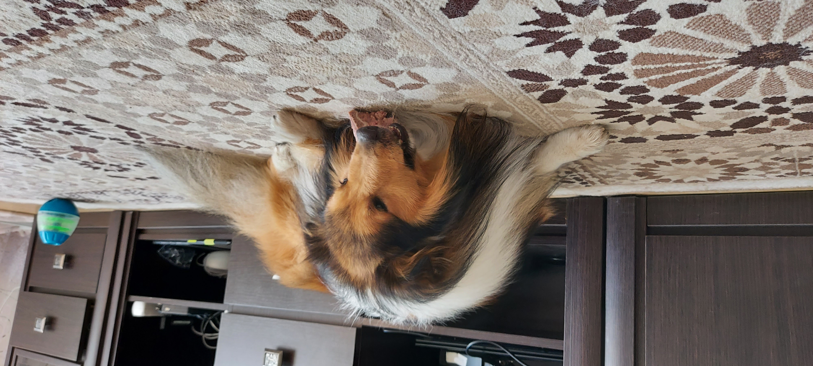
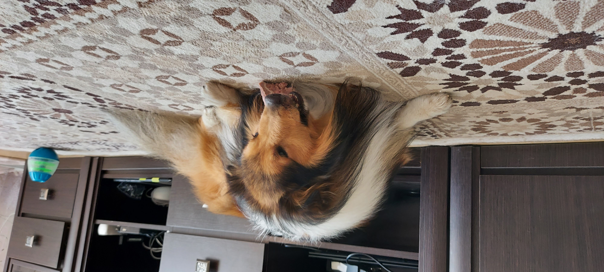
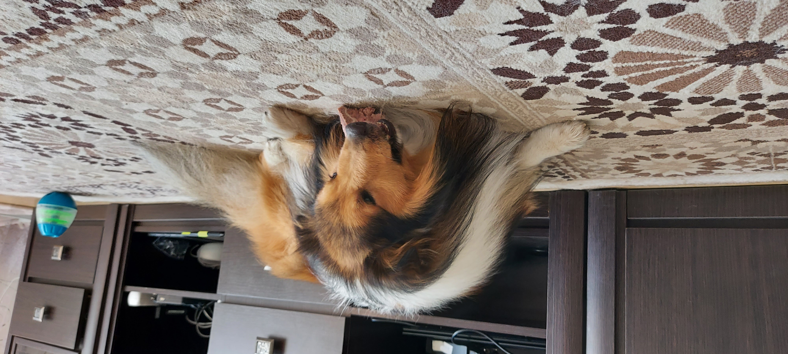

Моего пса зовут Ап-Полон , почти как
древнегреческого бога солнца.
Хотя если честно, он оправдывает свое имя. Такой же рыжий
как само
солнце и вездесущий. Покупку щенка нельзя было назвать спонтанной, поскольку я лелеяла мысль о собаке почти всю жизнь с самого детства и просто ждала возможности и того, кто будет рядом со мной и в моем сердце на всю жизнь.
Немного фактов о нем:
